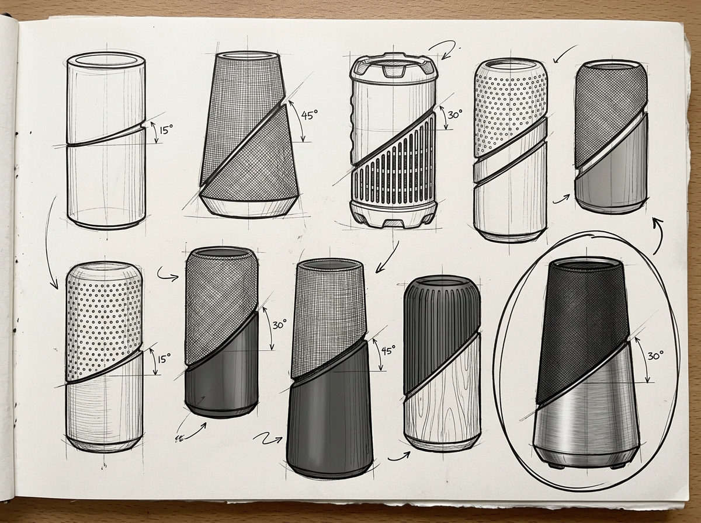
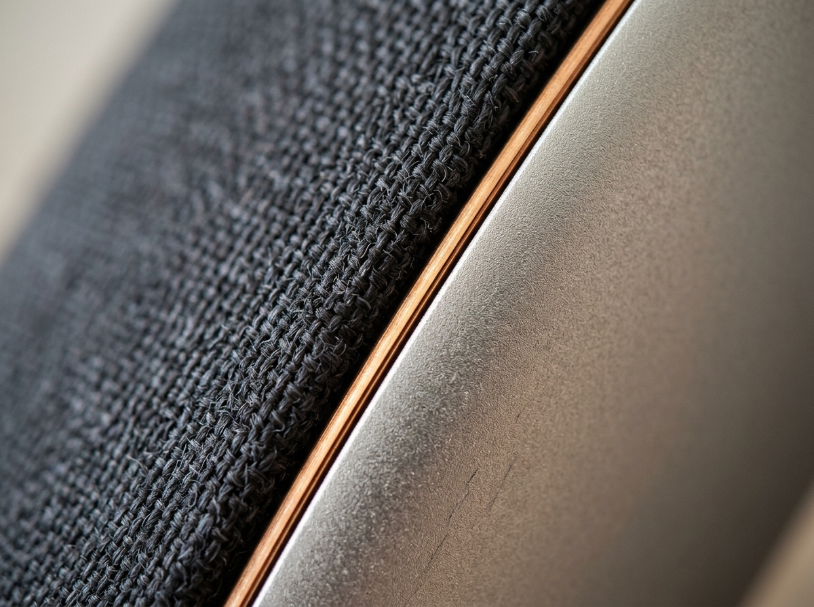
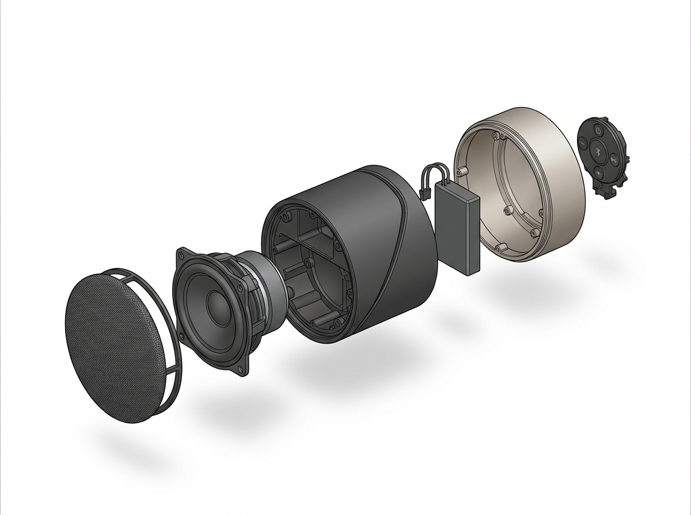
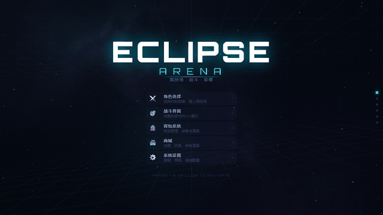
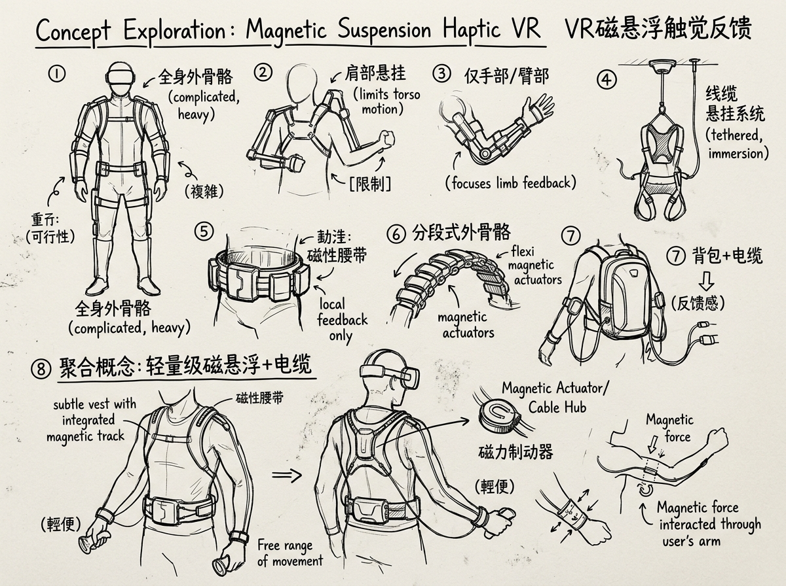
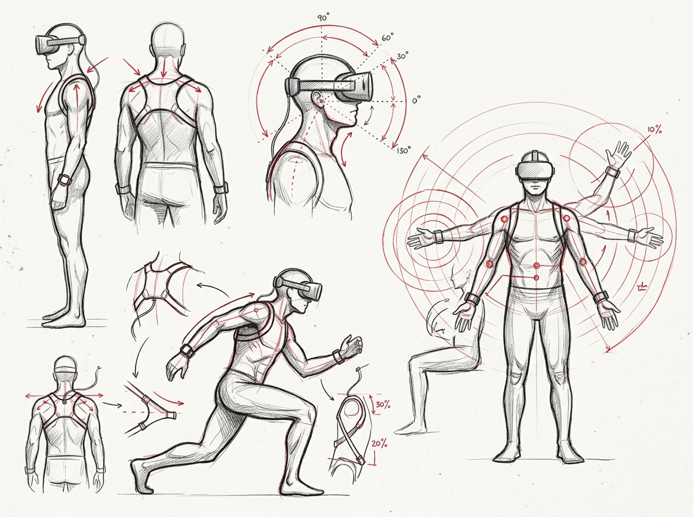
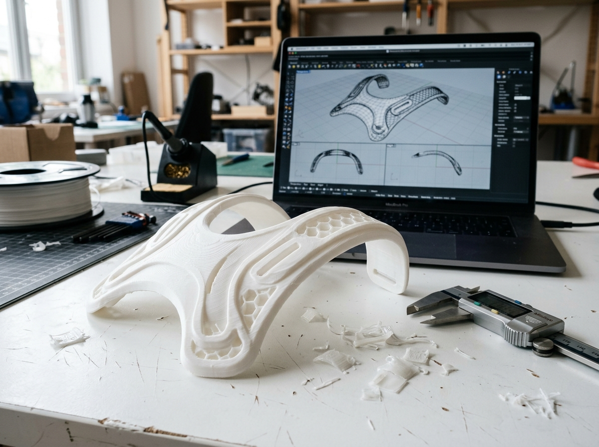
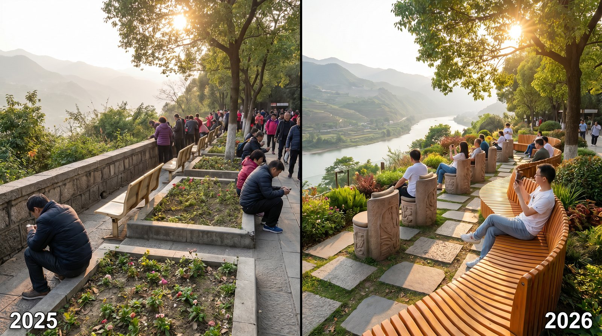
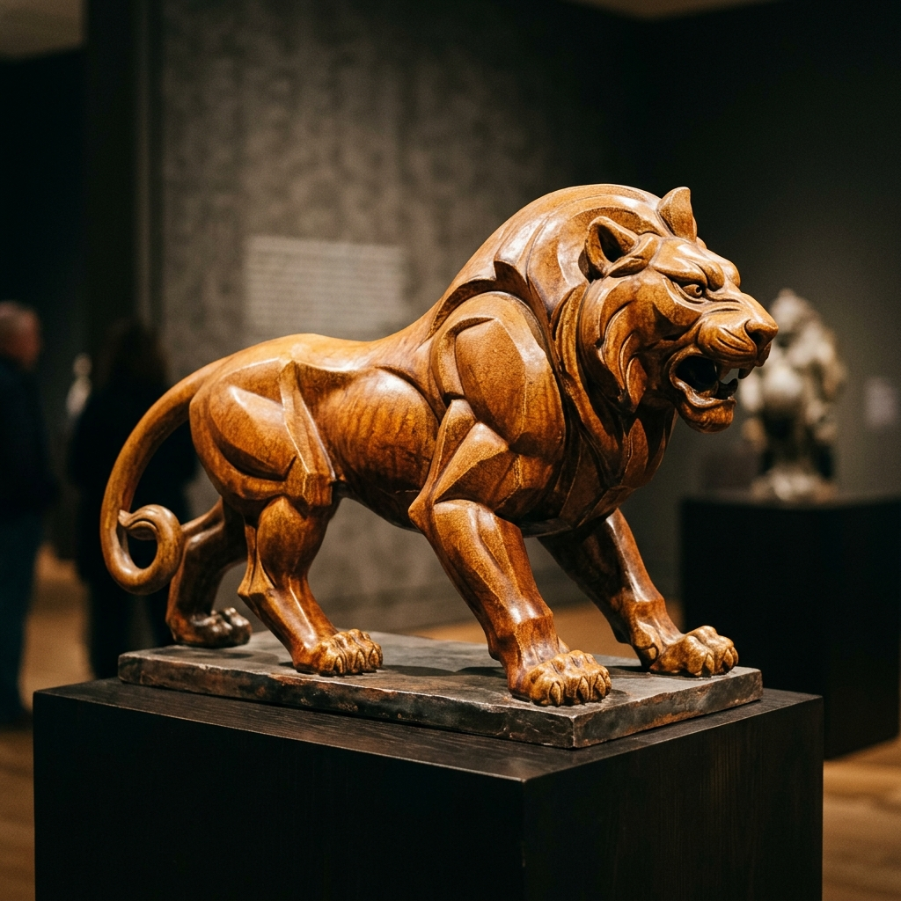

LIVE
迷茫的骑士AI 视频工作流实战验证 · Continuity Bible 方法论
一部完全由 AI 辅助生成的微电影。将「控制 AI 随机性」的方法论落地为完整叙事作品——Continuity Bible 角色管理 + Anchor Image 锁定 + 分层生成策略。
查看工作流探索 →我是金承旭，澳门科技大学产品设计大三学生。我相信好的设计存在于代码与实物的交汇处——既能用 Rhino 建模复杂曲面、3D 打印验证原型，也能写 React 把交互想法变成可点击的 Demo。
多年 3A 游戏玩家经历让我对交互体验有近乎偏执的敏感——一个按钮的反馈延迟、一个转场的缓动曲线、一个悬停的阴影变化，我都会注意到。这种敏感正在转化为我的 UI 设计能力与 Unity 2D 游戏开发实践。
目前寻找产品设计 / UI-UX / 游戏动画特效 方向实习，Base 澳门/大湾区。
在澳门科技大学的三年，我从一个只会打 Apex 的 124kg 男生，变成了能独立写 React、做 Unity、训 AI 模型的设计师。我的设计方法论里有一条隐藏规则：所有项目必须先过「我妈能不能看懂」测试——如果我妈看不懂我在做什么，说明叙事失败了。
每个项目都遵循同一套核心流程。但真正让这套流程加速的是 AI——不是替代设计师，而是把概念探索从数周压缩到数天，让设计师精力集中在"做判断"而非"画方案"。
实地蹲点、行为记录。从"游客弃椅选花坛"中定位真实痛点
将模糊不满转化为清晰设计问题——"贴墙座椅缺乏景观朝向"
手绘草图+AI并行探索。8-12方向2天内完成
SD/Midjourney/NanoBanana2——AI是加速器不是替代品
在约束中做取舍——全身外骨骼→腰腿磁吸方案的务实
Rhino→KeyShot→3D打印/代码原型。设计不被PPT锁死
一部完全由 AI 辅助生成的微电影。将「控制 AI 随机性」的方法论落地为完整叙事作品——Continuity Bible 角色管理 + Anchor Image 锁定 + 分层生成策略。
查看工作流探索 →
以"斜切分割"为核心设计语言，打破圆柱体音箱的视觉单调。Kvadrat 声学织物 × 阳极氧化铝两种材质沿斜切线对峙——既定义了视觉身份，又自然划分了声学功能区。



💡 反思：下次会更早引入用户测试验证 CMF 触感偏好，而非仅凭个人审美判断。
查看完整设计案例 →
科幻竞技场游戏完整UI设计语言系统，6大核心界面。NanoBanana2 AI 生成8位英雄角色原画 + 战斗场景背景。React 18 + Framer Motion 实现 AnimatePresence 页面转场、Spring 3D卡片、Canvas粒子、实时HUD模拟。桌面端 + 平板双断点响应式适配。
💡 反思：动画系统应先做关键帧草稿再编码，直接用 Framer Motion 调参效率低于先设计后实现。
完整 Unity 2D 烹饪模拟游戏，采用模块化架构（12 个 C# 脚本、GameManager 状态机驱动）。集成程序化粒子特效系统（烹饪蒸汽/油花飞溅/金币爆发/屏幕震动）、弹性 UI 动画系统（曲线驱动入场/弹跳/数字滚动）、Spine 骨骼动画角色。支持移动端捏合缩放和桌面端滚轮操作。
💡 反思：程序化粒子生成免去了外部贴图依赖，但若重来会在早期就搭建好 Post-processing 管线，而非后期补 Bloom/Vignette。

Stable Diffusion 驱动的 UX 设计流程——从 AI 视觉方向探索（6 组概念 2 天完成）到 Prompt 工程设计资产，最终落地为完整高保真原型。展示 AI 如何在 UX 流程中加速"探索-筛选-决策"循环。
💡 反思：AI 概念发散很快但筛选标准需更早明确，避免在过多方案中摇摆。
查看完整 UX 案例 → 🎨 设计系统 → 🫁 体验呼吸练习 →探索 AI 视频生成的"可控性"边界：建立 Continuity Bible 管理系统、Anchor Image 视觉锚点锁定、即梦/Runway 多平台对比。这是展示「控制 AI 随机性」能力的核心项目——对 AI 岗位是硬通货。
💡 核心发现：AI 视频的"随机性"不是 bug，是 feature——关键在于建立足够强的约束系统（Continuity Bible + Anchor Image）让随机性在可控范围内发挥。
查看完整工作流探索 →
从《黑豹2》《头号玩家》电影道具调研出发，发现 VR 设备"地面限制"导致的沉浸感断层，将空中悬浮体感定义为核心体验目标。运用 AI 生图完成外骨骼概念发散，收敛至磁吸+绳索轻量化方案；Rhino 7 建模复杂曲面并 3D 打印验证人机尺度。



💡 反思：应更早做 1:1 人机尺度 mockup，3D 打印缩小模型无法验证真实穿戴舒适度。
查看完整设计过程 →
澳门高校宿舍人均面积不足 4㎡，传统收纳无法适应学生"学习-睡眠-社交"多场景切换需求。联合室内设计 + 软件工程同学，设计模块化收纳产品 + 微信小程序。我负责主持用户访谈、产品外观与 CMF 设计、小程序全部 UI 界面。
💡 反思：跨专业协作中，统一设计语言文档应在一开始建立而非中途对齐，减少沟通损耗。
查看完整设计案例 →
与同学联合创立的独立陶瓷首饰品牌，我主导品牌官网全部 UI 设计与前端 MVP 落地。黑白植物影像构建 Hero Section 主视觉，商品图默认黑白处理，Hover 渐变过渡至原始彩色——增强探索感与视觉惊喜。
💡 反思：品牌电商网站应考虑移动端优先，首版桌面端为主的设计导致移动适配成本高。
查看完整设计案例 → 🌐 线上网站 ↗
实地观察发现"弃椅选花坛"现象——游客宁坐花坛边缘也不使用公共座椅。人车分流 + 观景视野 + 社交距离三维一体系统化方案。
查看完整设计推导 →

个人健康数据驱动的交互式仪表盘：SVG BMI 半圆仪表、12周趋势预测、燃脂效率排行。Vite + React，GitHub Actions 自动部署。
查看完整开发过程 →运用 Claude Code、Midjourney、Stable Diffusion 等 AI 工具链，独立完成 4 个线上可交互项目的完整开发与部署。覆盖游戏 UI 设计系统（React + Framer Motion）、品牌官网（设计规范 + 用户旅程）、个人健康数据追踪面板（Vite + CI/CD 自动部署）。掌握 Vibe Coding 完整工作流：需求分析 → AI 协作编码 → 版本控制 → 线上部署，设计到代码零延迟。
协助导师策划执行双年展全流程，从零搭建展台设计：以报纸为原材料手工打造沉船装置作为展厅视觉中心，统筹场地布置与空间叙事。
负责跨部门资源协调与现场执行，培养突发状况快速响应能力与团队协作意识。
熟练使用 Midjourney、NanoBanana2 等 AI 生图工具，擅长视觉类 Prompt 创作、概念发散与多方案快速验证。AI 融入设计全流程。
用户洞察 → 需求定义 → 概念发散 → 方案收敛 → 原型验证。注重从真实用户场景出发，将洞察转化为可验证的设计方案。
Rhino 7 复杂曲面与完整外观建模；KeyShot 产品级渲染；3D 打印快速原型验证。从数字模型到实体原型的全链路能力。
完整网页 UI 设计规范搭建，用户旅程设计，交互流程规划。具备 React/TypeScript 编码能力，设计到代码无缝衔接，2个项目线上可交互。
🎮 3A 游戏多年重度玩家，对交互体验与视觉设计有敏锐直觉
澳门科技大学产品设计专业大三，寻找产品设计 / UI/UX 方向实习。
Base 澳门 · 大湾区，可远程。